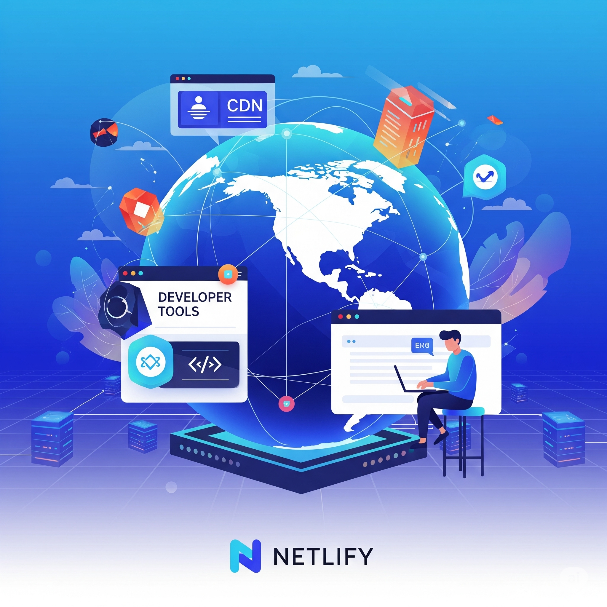

Publicado el 22 de Julio de 2025
Hoy quiero compartir mi experiencia desplegando mi portfolio en Netlify. Ha sido un proceso bastante sencillo y rápido. Utilicé Git para el control de versiones y conecté mi repositorio directamente con Netlify, lo que automatiza los despliegues con cada commit.
Esta plataforma me ha permitido tener mi sitio online en cuestión de minutos para poder compartir con el profesor de la asignatura de Lenguaje de Marcas. ¡Totalmente recomendado para proyectos estáticos!
Por poner un pero, lo haría con la carpeta de JavasCript, ya que al desplegarse el proyecto, Netlify no reconocía la ruta, y es que aunque VisualStudio si la reconocía, Netlify no, cuando me di cuenta del error y lo subsané, ya volvió a funciona todo sin problemas.
Publicado el 15 de Julio de 2025
La virtualización es un pilar fundamental en la administración de sistemas hoy en día. Permite ejecutar múltiples sistemas operativos en una única máquina física, optimizando recursos y facilitando la gestión. Conceptos como máquinas virtuales (VMs), hipervisores tipo 1 y tipo 2 son esenciales.
En clase de ASIR hemos estado explorando herramientas como VirtualBox y VMware, que nos abren un mundo de posibilidades para probar configuraciones y entornos sin afectar el hardware real.